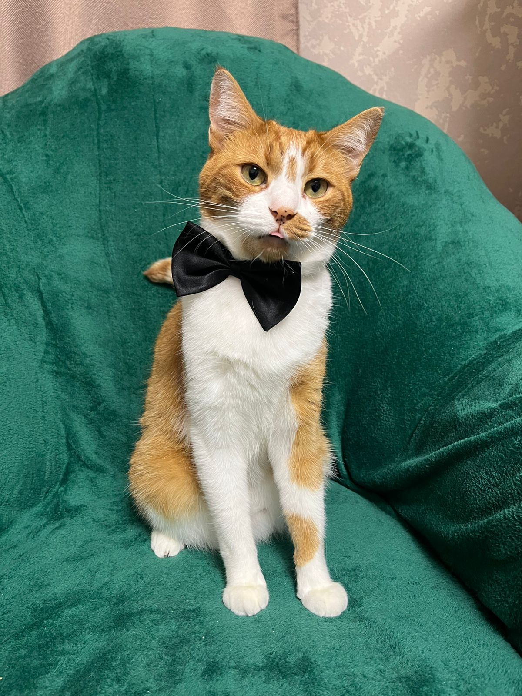
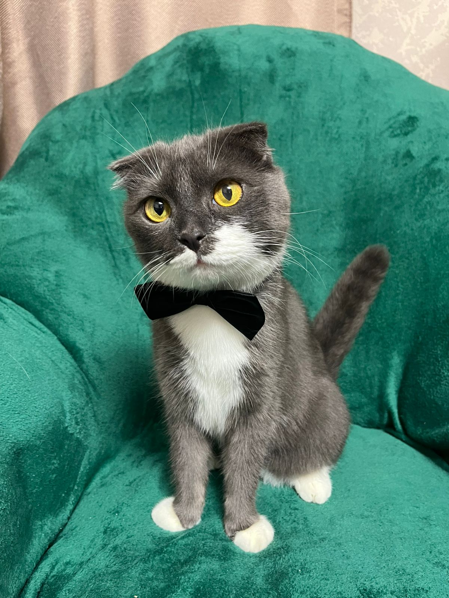

Встреча у окна
Лучик замечает Кузю во дворе и зовёт его играть.
Маленькая интерактивная история
Лучик — любопытный рыжий кот, а Кузя — спокойный вислоухий друг. Вместе даже самый обычный день превращается в приключение.
Начать историюТри короткие главы
Лучик замечает Кузю во дворе и зовёт его играть.
Друзья носятся вокруг дерева и прячутся за цветами.
После игры они возвращаются домой и делят уютный вечер.
Глава 1 из 3
Глава 4 · Настоящие моменты
Фотографии из первых проектов собраны в одну живую главу. Выбирай тему — коллаж перестроится сам.





Следующее обновление
Блок уже подготовлен. Когда ты пришлёшь анимацию, мы добавим её сюда без переделки страницы.